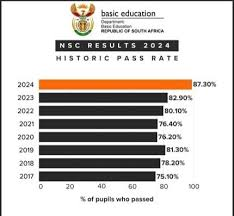

🎓 Matric Results: Are We Setting Learners Up for Success — or Disappointment?
May 9, 2025
Each year, the release of South Africa’s Matric results dominates headlines. We celebrate increasing Bachelor’s Pass rates, share photos of proud learners, and quote improved national statistics. But behind the numbers, many students — especially in under-resourced public schools — are stepping into the world with misplaced hope and very little guidance.
💡 What Does a Matric Pass Really Mean?
South Africa’s Matric pass system includes three levels:
- ✅ Higher Certificate Pass: 40% in Home Language, 40% in 2 other subjects, 30% in the rest.
- ✅ Diploma Pass: 40% in Home Language and 4 other subjects.
- ✅ Bachelor’s Pass: 40% in Home Language, 50% in at least 4 other subjects.
But here’s the harsh truth: a Bachelor’s Pass doesn’t guarantee university admission.
📉 So Why Are So Many Rejected from University?
The answer lies in the APS (Admission Point Score) system — which many learners aren’t taught about.
Many achieve a Bachelor’s Pass without the right APS or subjects. The result? Frustration. Confusion. Lost hope.
🏫 The Reality for Public School Learners
- ❌ Unaware of how the APS works
- ❌ Choosing subjects without guidance
- ❌ Lacking internet access to research careers
- ❌ Pushed to “just pass Matric” — not prepare for life after school
❓ What Happens to Those Who Don’t Pass?
- 🎯 Supplementary exams
- 🏫 TVET colleges with practical training
- 🔁 Second Chance Matric programs
But many learners don’t know these exist.
🛠 What Needs to Change?
- 📚 Introduce APS education and career planning from Grade 9
- 💻 Invest in internet and digital access at schools
- 🤝 Provide real-time support through school counselors
- 🧭 Equip learners to choose wisely for their futures
🙌 Final Thoughts
Celebrating Matric results is important. But we must be honest about what a pass means — and what it doesn’t. Let’s not just push for more passes. Let’s push for more possibilities.